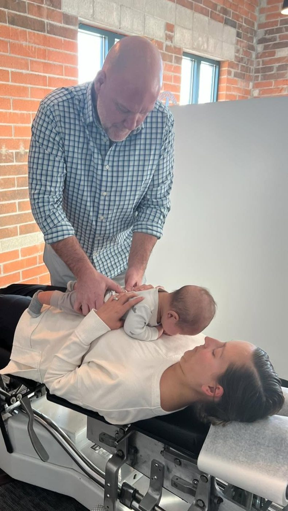

Meet Dr. Rob Dorn
Twenty years of practice in Oconomowoc, and he still gets adjusted every week himself.
Dr. Rob has been practicing and serving Oconomowoc and the surrounding Lake Country area for 20 years. He graduated from Northwestern Health Sciences University in 2004 and headed straight back to Oconomowoc to open a solo practice.
He's a former Chiropractic Society of Wisconsin board member and is still a member, along with the International Chiropractors Association. Outside the office, family comes first: his son Finnegan is a constant source of enjoyment and unconditional love. He attends Whitestone Church and enjoys camping, fishing, and working out.
Why he still gets adjusted weekly
"Chiropractic care helped me as a kid with asthma and allergies, then helped me perform and recover in sports. Today I still get adjusted weekly because it helps my mental acuity, sleep, and recovery. That quality of life is what I want for everyone, from babies to the more 'seasoned' folks."
What guides the practice
Our mission
To serve our community with passion, empathy, and gratitude. You're a neighbor here, not a number; care is personal, honest, and unhurried.
Our purpose
Optimizing neurostructural function. In plain English: helping your spine and nervous system work the way they're built to, so your whole body works better.

From first adjustments to "seasoned" spines
Dr. Rob's own chiropractic story started in childhood, so babies, kids, athletes, parents, and grandparents all get care adapted to their age, size, and goals. Twenty years in, many patients are second-generation.